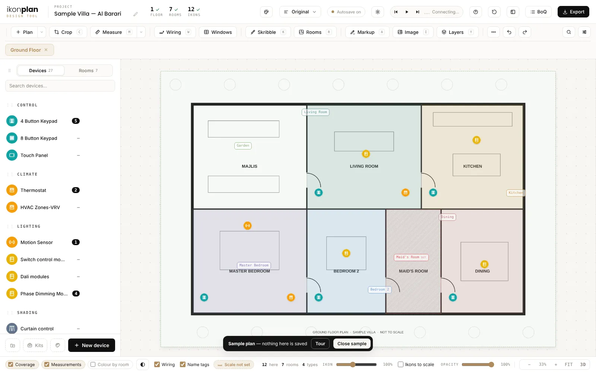
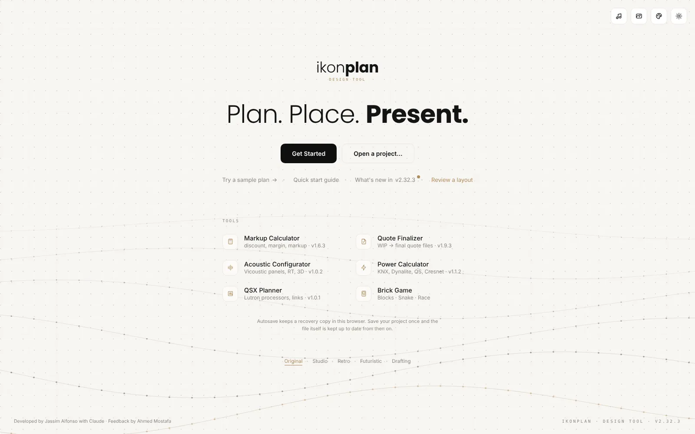
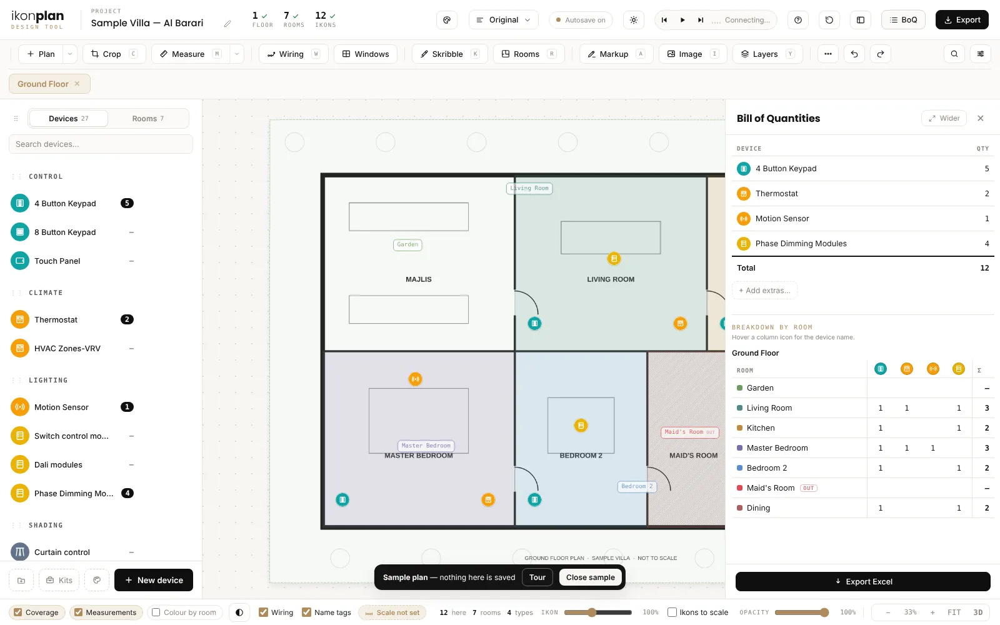
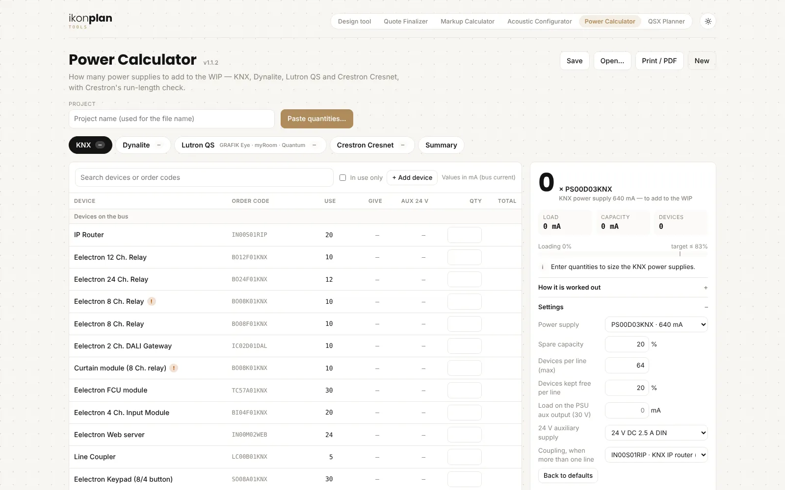
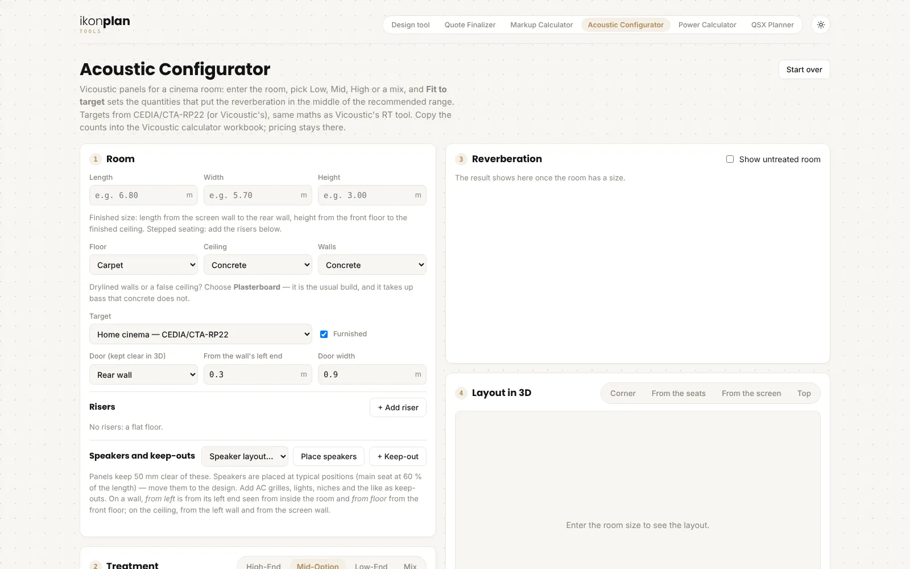

challenge 03 / 2026
ikonplan
built at work / used every dayA browser tool for designing AV and smart-home systems on a floor plan, and turning that design into the drawings, slides and spreadsheets a client receives.
- role
- design + code, with Claude
- stack
- html / css / js — no framework, no server
- first release
- jul 2026
- releases since
- 895
Challenge
[01]Same information. Typed once four times.
In pre-sales, a design lives in several places at once: devices marked up on the architect's floor plan, then counted and copied into an Excel field-device sheet, a priced bill of quantities and a slide deck for the client.
Every count was done by hand. Every new revision of the plan meant doing it again — and any number that drifted between the drawing and the spreadsheet was one the client would find first.
Try it
[02]a tiny rebuild of the core idea: place devices on a plan, and the bill of quantities keeps up on its own.
Built
[03]- a
One plan, every output
Place devices once. Layout sheets, slides, the Excel FD sheet, a priced BoQ and a CAD-ready DXF all come from the same plan, so the numbers always agree.
- b
Rooms in one tap
Tap inside a room on a PDF and it finds the walls and reads the room's name from the drawing. Or find every room on a floor in one go.
- c
Revisions without redoing
Drop in the architect's next revision: it lines up with the old one and moves every device, room and note across in one undoable step.
- d
Design standards
Design a room once, save it as a recipe, and every room of that kind fills itself the same way.
- e
Tools around it
Smaller tools grew beside it: bus power supply sizing for KNX, Dynalite, Lutron QS and Cresnet (replacing a spreadsheet), a Lutron QSX planner, a cinema acoustics configurator and a quote finaliser.
- f
Works anywhere
No install, no login. It runs offline as an app on a laptop, tablet or phone — projects are just files you own.
Snaps
[04]the real thing, shown with its built-in sample plan — no client data.





Learned
[05]Shipping to real people every day is a different sport.
- Changelog for the team plain words — what you see and do, not how the code works
- Test before every release not after someone finds it
- Exports must not move a pixel the client sheets are compared against a known-good build
- The best feature removes a step if it adds a click, it had better save ten
all cases